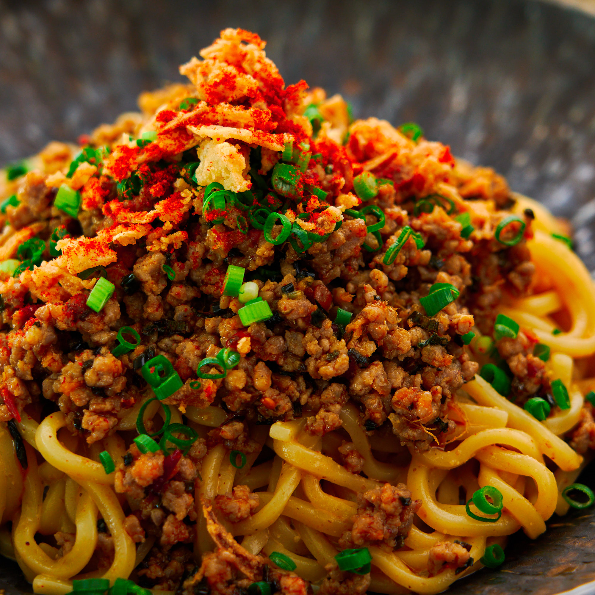

Corn Beef Ramen
Regular |
Home |
Hot Dog

Description
For when you're craving ramen, but you want something more upscale full of protein.
Ingredients
- 1 Maruchan Chicken Ramen Packet
- 3 cups Water
- 1 tbsp Jamaican Grace Hot Sauce
- Half a can of Grace corned beef
Steps
- Add water and the noodles from the Maruchan packet into a pot and boil on medium-high heat until noodles are firm, but a little springy.
- Drain water, leaving just a little tablespoon in the pot.
- Add the half of the corned beef into the pot and turn pot onto lower heat.
- Stir until the corned beef is completely broken up into pieces and is adequately coating the noodles.
- Add hot sauce to pan and turn off heat.
- Stir until the hot sauce is incorporated.
- Plate in a bowl and eat.